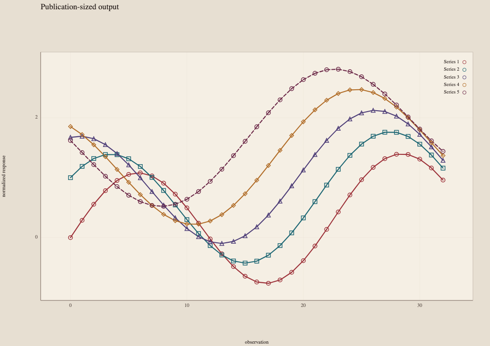
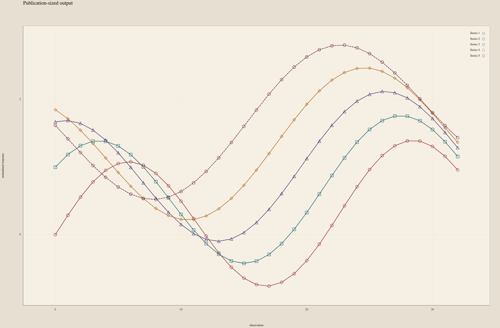

A · temporal response
Five site responses resolve by observation before connecting through time.
Figurestead
V2 technical study · local only · not deployed
Technical showcase
Figurestead is an experimental scientific-figure system for Python and the browser, built around normalized evidence contracts, multiple renderer families, semantic motion, and publication-aware output.
One deterministic synthetic watershed study tests what happens when the evidence becomes meaningfully denser.
01
Five monitoring sites and eighteen storm-response intervals exercise shared semantic identity and order, with redundant marker and dash channels where each renderer provides them.
02
Four existing renderer families describe the same five-site watershed system as a compact scientific plate.
Shared site identity and order
A · temporal response
Five site responses resolve by observation before connecting through time.
B · relationship
Event rainfall and peak turbidity retain site identity around one shared fitted relationship.
C · distribution
Replicate nitrate samples and site medians show distributional structure beyond a single estimate.
D · sampling coverage
Exact sampling dates precede annual distinct-site summaries; gaps remain visible.
All four panels use deterministic synthetic values and the same Headwater → Estuary order. The key is resolved from the line contract: color plus marker, with the fifth line identity recovered by dash. Point-only families do not claim universal five-way hue-independent glyph identity. No new renderer or product API is introduced.
03
The same terminal five-site figure is reviewed with Machado severity-1 anomaly matrices while marker and dash identity remains unchanged.
Method. Machado, Oliveira & Fernandes’ severity-1 matrices in linear-light sRGB: decode sRGB → apply 3×3 matrix → clamp → encode sRGB. A narrow matrix-and-vector gate checks the browser assumptions against Colour Science’s reference matrices.
Limits. These simulations support perceptual review, not medical or accessibility certification, and not testing with people. The referenced tritanomaly result is explicitly treated as an approximation. The public Atlas remains the broader non-color evidence.
Machado et al. 2009 · Colour Science reference implementation
04
The 89 mm and 183 mm digital outputs retain their true relative dimensions inside a tighter comparison.


{kind=link}
{kind=link}